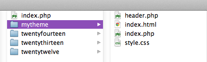
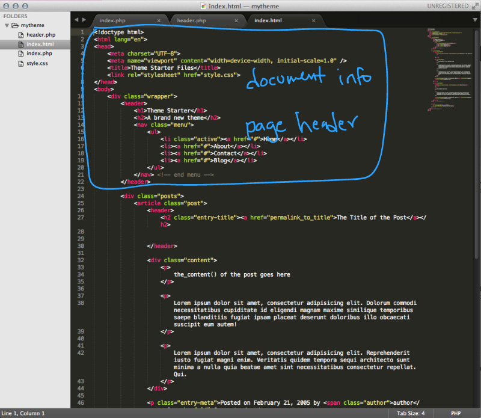
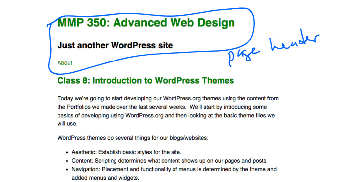
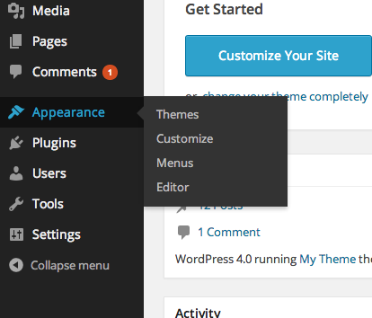
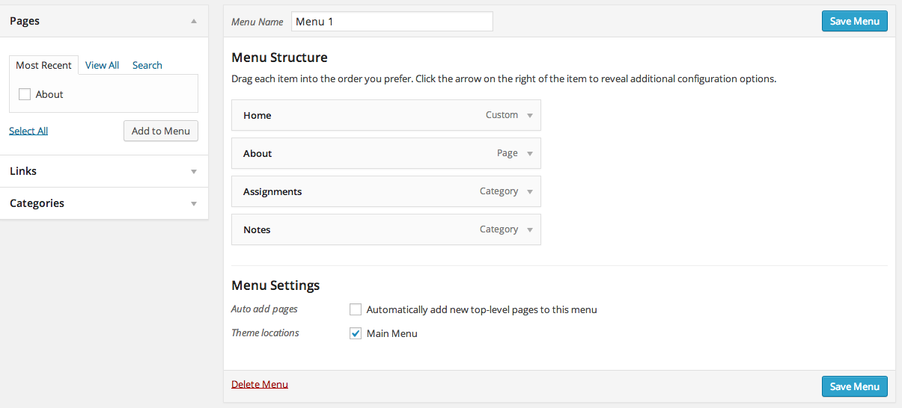
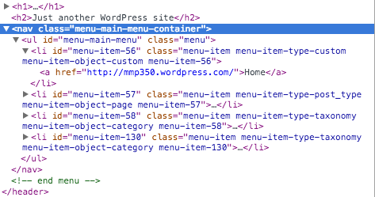

First we’ll start with the header. In your local directory, create a new file called header.php.
In this file we want to set up the header of our website, which will include the name of the site and any navigation or other aspects that we want to appear on every page. This will be dependent on your wireframe design. You may not have navigation or even a header on your pages so you may want to take these out later. But you will need the basic info that is required at the top of every web page.
I’m going to copy and paste the content from index.php that I want to appear in header.php.
This corresponds to the header of my website, which will appear on every page (that calls for the header).
The header includes import stuff like the CSS link and other meta information.
Once we’ve copied the header over, go back to index.php and add a line of php to retrieve the header when the page is loaded. WordPress provides a nice function for us to do that, get_header().
<?php get_header(); ?>In our header, we will also want to have a menu for our site. In order to use the menu function from WordPress, we need to establish a link to the menu in our functions.php file. So we’re going to create that file in our local theme directory and add the following script to add a menu option to the Dashboard where we can then use the Dashboard interface to drag and drop menu items.
For now, add the following code in functions.php:
<?php
register_nav_menu('main-menu', 'Main Menu');
?>Once functions.php has been uploaded, the Menus option will appear in the WordPress Dashboard:
Now a Main Menu can be created:
For this menu to appear in the header, a php script must be added to header.php:
<?php $main_menu_top = array(
'theme-location' => 'main-menu',
'container' => 'nav'
);
?>
<?php wp_nav_menu( $main_menu_top ); ?>Those lines should completely replace the HTML menu in the template:
<nav class="menu">
<ul>
<li class="active"><a href="#">Home</a></li>
<li><a href="#">About</a></li>
<li><a href="#">Contact</a></li>
<li><a href="#">Blog</a></li>
</ul>
</nav> This php will generate the menu structure based on the menu and classes set up in the dashboard.
Try creating footer.php in the same manner that we just created header.php. Depending on your site design/wireframe, you may have another navigation menu to add, or links to social networks, or other items that could appear on every page.